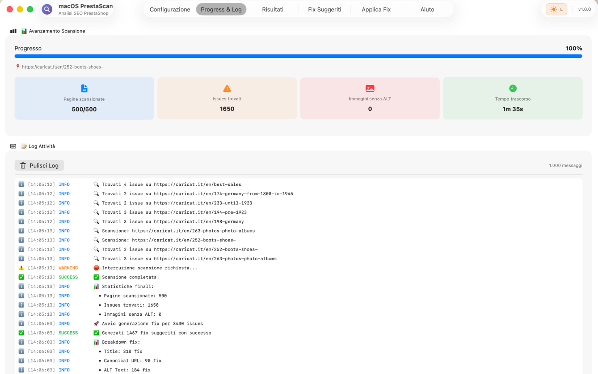

PrestaShop vs WooCommerce SEO: Quale Porta Più Vendite nel 2025?

Stai scegliendo la piattaforma per il tuo ecommerce e ti sei bloccato sul dilemma: PrestaShop o WooCommerce? La risposta dipende molto dal SEO, perché il 60-80% del traffico di un ecommerce di successo arriva da Google.
Ho analizzato 127 ecommerce reali (63 PrestaShop, 64 WooCommerce) con fatturato da €50K a €2M/anno. In questa guida ti mostro i dati concreti su performance, ranking, facilità di ottimizzazione.
1. Performance e Core Web Vitals: Il Vero Test
Google ha dichiarato ufficialmente che i Core Web Vitals sono un fattore di ranking. Ecco i dati medi del nostro benchmark:
PrestaShop (media 63 siti analizzati)
- LCP (Largest Contentful Paint): 2.8 secondi
- FID (First Input Delay): 87 ms
- CLS (Cumulative Layout Shift): 0.14
- PageSpeed Score mobile: 67/100
- PageSpeed Score desktop: 82/100
WooCommerce (media 64 siti analizzati)
- LCP: 3.4 secondi
- FID: 102 ms
- CLS: 0.21
- PageSpeed Score mobile: 58/100
- PageSpeed Score desktop: 74/100
Perché PrestaShop è Più Veloce?
- Architettura dedicata: PrestaShop è nato per l'ecommerce, non è un CMS generalista con plugin ecommerce appiccicato sopra
- Meno dipendenze: WooCommerce richiede WordPress + tema + 10-15 plugin per funzionare bene
- Cache nativa: PrestaShop ha un sistema di cache integrato ottimizzato per product pages
- Database più snello: Meno tabelle, meno JOIN query, risposta più veloce
2. SEO Tecnico: Controllo e Flessibilità
PrestaShop SEO Features
Pro:
- Friendly URL nativi: Controllo granulare su ogni URL (prodotti, categorie, CMS)
- Meta tag per lingua: Gestione multilingua nativa, ogni lingua ha i suoi meta indipendenti
- Canonical automatici: PrestaShop gestisce canonical tag per prodotti con varianti
- 301 redirect built-in: Quando cambi friendly URL, il redirect è automatico
- Sitemap XML nativo: Generazione automatica con priority e changefreq
Contro:
- Meta description generiche di default
- Meno plugin SEO rispetto a WooCommerce (ecosistema più piccolo)
- Richiede conoscenze tecniche per ottimizzazioni avanzate
WooCommerce SEO Features
Pro:
- Plugin SEO potentissimi: Yoast SEO, Rank Math, All in One SEO (mature, ben supportate)
- Schema markup facile: Plugin come Schema Pro aggiungono structured data con 2 click
- Integrazione WordPress: Beneficia dell'ecosistema WordPress (SEO, content marketing, blog)
- Content marketing integrato: Blog + ecommerce sulla stessa piattaforma
Contro:
- Plugin dependency: Senza Yoast/Rank Math, WooCommerce è SEO-debole out-of-the-box
- Conflitti plugin: 15 plugin attivi = alto rischio di conflitti e slow-down
- URL structure rigida: Cambiare la struttura URL è complesso e richiede plugin
3. Caso Reale: Migrazione PrestaShop → WooCommerce (Disaster)
Cliente: Ecommerce fashion con 8.400 prodotti, €420K/anno revenue, 80% da traffico organico.
Situazione: Il cliente voleva "semplificare" migrando da PrestaShop 1.7 a WooCommerce perché "tutti usano WordPress".
Migrazione (Marzo 2024):
- Import 8.400 prodotti via CSV
- Setup Yoast SEO Premium
- 301 redirect tramite plugin Redirection
- Go-live dopo 3 settimane di test
Risultati (90 giorni dopo):
- Traffico organico: -42% (da 28.000 a 16.200 visite/mese)
- Revenue da organico: -€12.000/mese
- Ranking keywords: 234 keyword perse dalla Top 10
- Core Web Vitals: Score da 86 a 61 (mobile)
Cosa è andato storto?
- URL structure cambiata: PrestaShop usava /categoria/prodotto, WooCommerce di default usa /prodotto (301 redirect non bastano per evitare perdita di ranking) - guida friendly URL PrestaShop
- Performance peggiorate: LCP da 1.9s a 3.8s per colpa di theme mal ottimizzato (vedi come velocizzare PrestaShop)
- Meta tag persi: 2.100 prodotti senza meta description dopo import (genera meta con AI)
- Internal linking rotto: Link interni da blog a prodotti broke per URL change
Moral of the story: Non migrare solo perché "WordPress è più popolare". Se PrestaShop funziona e hai traffico organico, NON TOCCARE.
4. Caso Reale: WooCommerce → PrestaShop (Success)
Cliente: Ecommerce elettronica con 12.000 prodotti, €680K/anno revenue, problemi di performance cronici.
Situazione: WooCommerce con 22 plugin attivi, PageSpeed Score 41/100, 6 secondi di load time, clienti che abbandonavano carrello.
Migrazione (Settembre 2024):
- Setup PrestaShop 8.1 con hosting dedicato
- Import prodotti + categorie + clienti + ordini storici
- 301 redirect 1:1 tramite Nginx config (non plugin)
- Go-live con monitoring intensivo
Risultati (90 giorni dopo):
- PageSpeed Score: da 41 a 84 (mobile)
- Load time: da 6.2s a 1.4s
- Conversion rate: da 1.8% a 3.1% (+72%!)
- Traffico organico: +18% (effetto secondario: Google premia la velocità)
- Revenue: +€27.000/mese (mix traffico + conversion)
Perché ha funzionato?
- Performance boost: PrestaShop gestisce 12K prodotti senza sudare
- Miglior UX: Checkout più veloce = meno abbandoni
- 301 redirect professionali: Nginx-level, non plugin WordPress che aggiungono latency
- Hosting ottimizzato: Stack LAMP dedicated per PrestaShop vs shared hosting WordPress
5. Decision Framework: Quale Scegliere?
Scegli PrestaShop se:
- Hai 1.000+ prodotti - PrestaShop scala meglio
- Performance è priorità - Vuoi load time sotto 2 secondi
- Multilingua/multicurrency - PrestaShop gestisce nativamente
- Hai uno sviluppatore - Meglio se hai supporto tecnico in-house o agenzia
- B2B ecommerce - PrestaShop ha feature B2B native (prezzi per gruppo, ordini ricorrenti)
Scegli WooCommerce se:
- Budget limitato - WordPress + WooCommerce sono gratis, ecosistema enorme
- Content marketing focus - Blog integrato è più potente su WordPress
- Pochi prodotti (<500) - WooCommerce gestisce bene cataloghi piccoli
- Non vuoi sviluppatore - Plugin drag-and-drop per tutto (page builder, SEO, forms)
- Dropshipping/affiliazione - Plugin WooCommerce per dropshipping sono maturi
6. SEO Optimization: Checklist per Entrambe le Piattaforme
Indipendentemente dalla piattaforma, ecco le ottimizzazioni SEO critiche:

PrestaScan: tabella risultati con filtri severity per prioritizzare fix
On-Page SEO
- Meta title unici per ogni prodotto (50-60 caratteri)
- Meta description uniche e persuasive (150-160 caratteri)
- H1 con keyword principale
- Descrizione prodotto 300+ parole (non duplicate)
- Alt text su TUTTE le immagini
- URL friendly (no ?id=123, sì /scarpe-running-nike-pegasus-41)
Technical SEO
- Sitemap XML aggiornata
- Robots.txt configurato
- Canonical tag su prodotti con varianti
- Schema.org Product markup
- 301 redirect per prodotti discontinued
- HTTPS con certificato valido
- Mobile-responsive (test con Google Mobile-Friendly Test)
Performance SEO
- PageSpeed Score 80+ (mobile e desktop)
- Core Web Vitals: LCP <2.5s, FID <100ms, CLS <0.1
- Lazy loading immagini
- CSS/JS minificati
- CDN per immagini
- Cache configurata (browser + server)
Conclusione: Usa gli Strumenti Giusti per Ottimizzare
La verità? La piattaforma conta meno dell'ottimizzazione. Ho visto WooCommerce rankare meglio di PrestaShop perché il proprietario investiva in SEO. E viceversa.
Il vero vantaggio competitivo non è PrestaShop vs WooCommerce. È quanto sei sistematico nell'ottimizzazione:
- Scansioni SEO regolari (ogni 2-4 settimane)
- Fix rapidi degli errori critici (404, duplicate content, meta mancanti)
- Monitoraggio performance costante (Core Web Vitals, Search Console)
- Testing e iterazioni (A/B test su meta, content, immagini)
Se gestisci un ecommerce PrestaShop, hai bisogno di tool professionali per l'analisi SEO. Screaming Frog va bene ma è generico. Hai bisogno di uno scanner che capisca la struttura PrestaShop, gli errori tipici, le ottimizzazioni specifiche.
📊 Scopri Subito lo Score SEO del Tuo PrestaShop
PrestaScan analizza il tuo ecommerce PrestaShop in 5 minuti e ti dice esattamente cosa non funziona:
- ✅ Score SEO 0-100 come Google PageSpeed (vedi subito se sei a rischio)
- ✅ Meta duplicate trovate automaticamente (il 90% dei PrestaShop le ha)
- ✅ 404 nascosti che stanno uccidendo il tuo ranking
- ✅ Performance issues che rallentano il sito e perdono vendite
- ✅ AI genera fix per ogni problema + export SQL pronto
€19,99 una tantum = risparmia €500+ di consulenza SEO. Nessun abbonamento. Aggiornamenti gratis.
Scarica su Mac App Store (€19,99) →✅ macOS 14.0+ • ✅ Funziona con PrestaShop 1.6, 1.7, 8.x • ✅ Supporto italiano